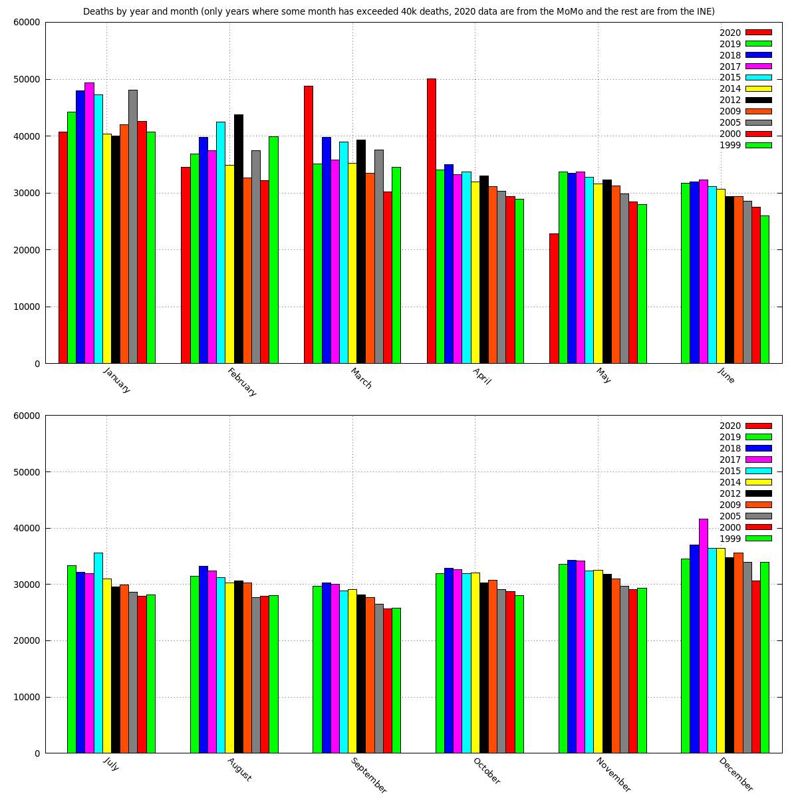
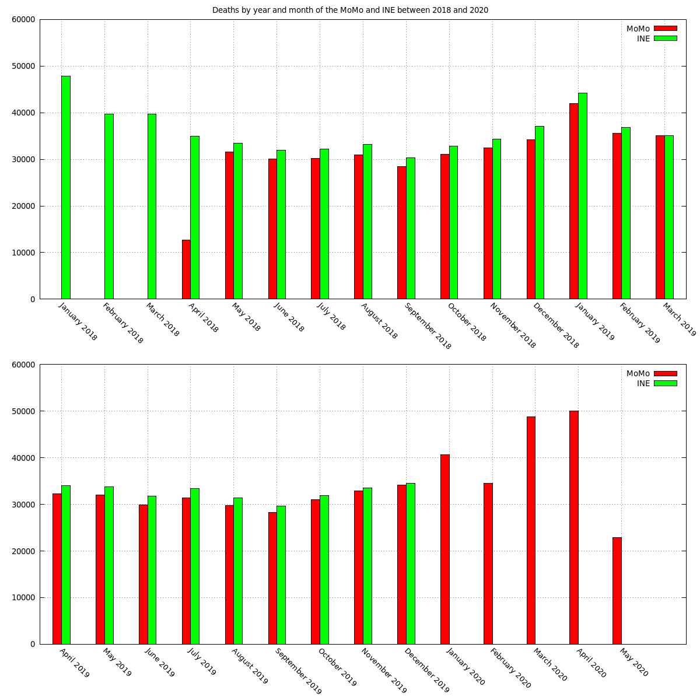
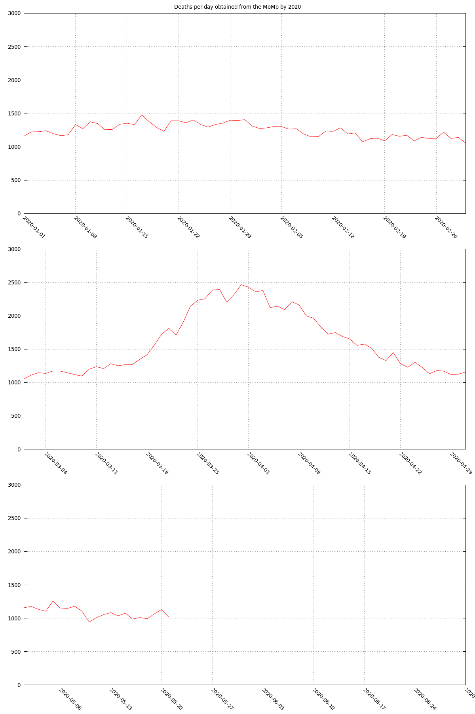
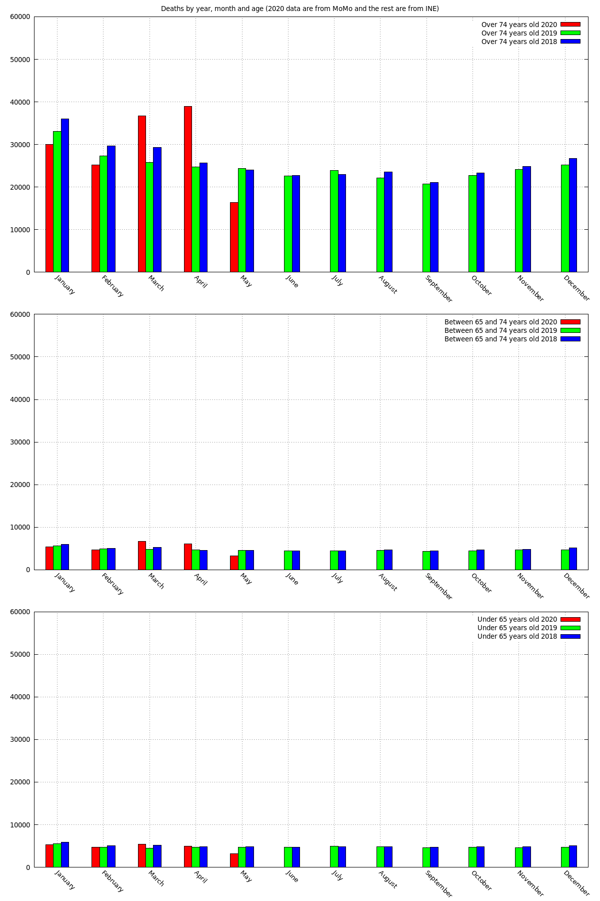
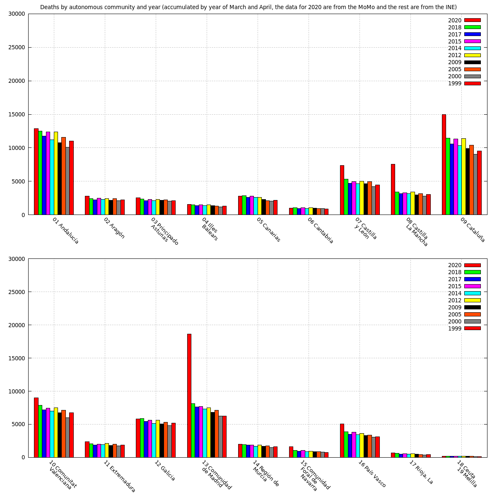
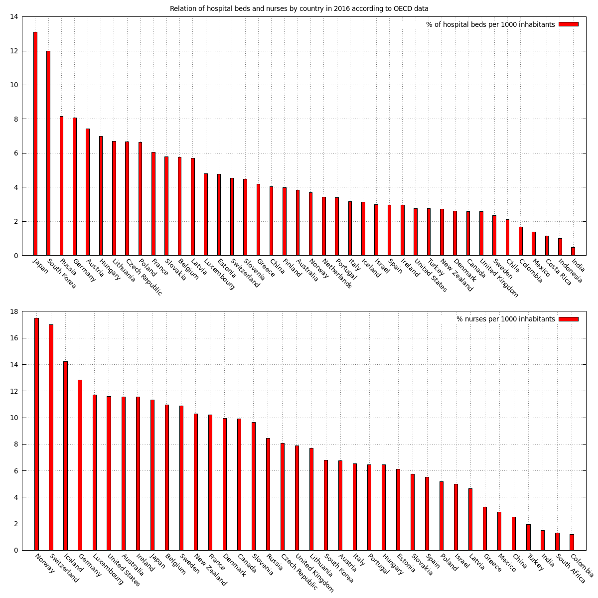

EN
ES
CA
Useful Spain information about the covid-19 impact: Graphs of deaths by year, origin of the data, daily accumulated, by age, by autonomous community, and more
Deaths by year and month (only years where some month has exceeded 40k deaths, 2020 data are from the MoMo and the rest are from the INE)

Deaths by year and month of the MoMo and INE between 2018 and 2020

Deaths per day obtained from the MoMo by 2020

Deaths by year, month and age (2020 data are from MoMo and the rest are from INE)

Deaths by autonomous community and year (accumulated by year of March and April, the data for 2020 are from the MoMo and the rest are from the INE)

Places of residences by type and autonomous community (data obtained from envejecimientoenred.es, from the CSIC of 2019)

Relation of hospital beds and nurses by country in 2016 according to OECD data
